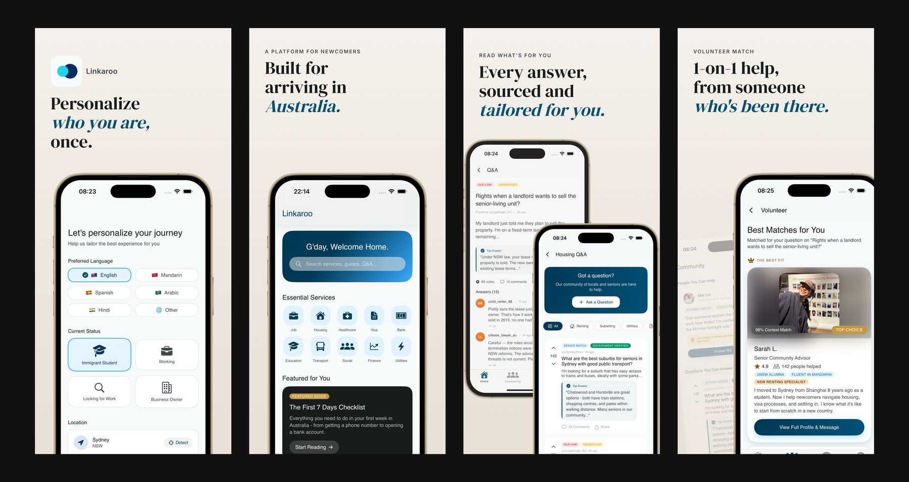
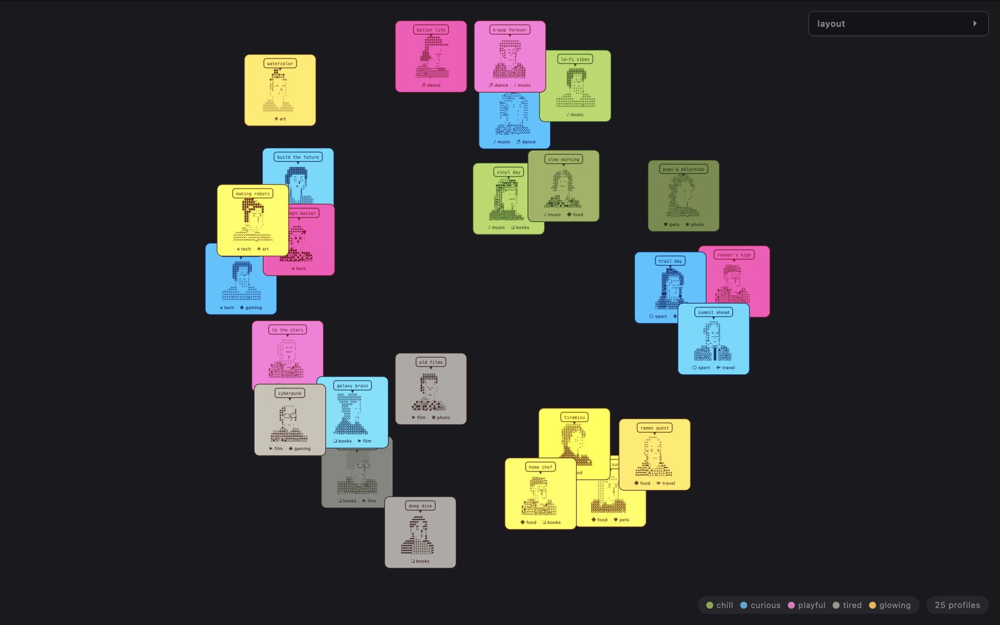

Tech Fest | AI Showcase
Two projects, one showcase
At Tech Fest | AI Showcase, I presented two working prototypes that move from interaction design into implementation: Linkaroo, a runnable iOS product, and Anonymous Connection, a web-and-hardware social installation.
Linkaroo
Linkaroo helps newcomers to Australia find context-aware community information and one-to-one volunteer support. I used an AI-assisted, spec-driven workflow to move from product concept and interface system to a runnable SwiftUI prototype.

Anonymous Connection
Anonymous Connection explores a lower-pressure way for strangers to meet. Participants create an avatar from their current mood and interests; the browser experience, collective wall and ESP32 screen turn those signals into a shared physical interaction.
